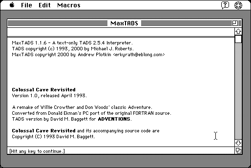

Download
MaxTADS-116.zip (324K) MaxTADS 1.1.6 repackaged into a zipped hfs disk image and checksum file. The disk image can be mounted with Mini vMac.
MaxTADS-116.hqx (438K) MaxTADS 1.1.6 in the original format.
copyright: Michael J. Roberts, port by Andrew Plotkin
mod date: Aug 6, 2000
license: Freeware
official url :
MaxTADS 1.1.6 -- An Macintosh interface for text adventures
“Interpreter for TADs text adventures.” It can also “build a stand-alone Macintosh executable from a TADS game file.” Similar to MaxZip. Requires System 7. Source code is available (below).

Download Source
MaxTADS-src-116.zip (455K) MaxTADS 1.1.6 source repackaged into a zipped hfs disk image and checksum file. The disk image can be mounted with Mini vMac.
MaxTADS-src-116.hqx (672K) MaxTADS 1.1.6 source in the original format.
If you find these downloads useful, please consider helping the Gryphel Project, which hosts them.
Here are the md5 checksums for the downloads, signed with Gryphel Key 5:
--------- GRY SIGNED TEXT --------- 581ad955b009a98722146447aa3e0885 MaxTADS-116.zip d00e153bbdc589323ce38241dc20becf MaxTADS-116.hqx abc26ba7a4eae544200d28798b4602a8 MaxTADS-src-116.zip 8ac227389aa399f6f0b8e3327f8b2762 MaxTADS-src-116.hqx ------- BEGIN GRY SIGNATURE ------- Gry/4Xa8CFcUzxdN/P+OcWbeYF1yyE1uyld616LS1yqQcYkc0/u+ArqrXIVLpAXu BvYaI2BMYR42M3RW19gxA4LmHY/+xs8T8SpyEthN9pd85PzqiCF8jUqd7SdbIKxz UmBJ8pfocSFw3xjpHQHVT7NacFGLabCRdDQRD4CQ0KCw9PV6diXkffOB792Wg/7T -------- END GRY SIGNATURE --------